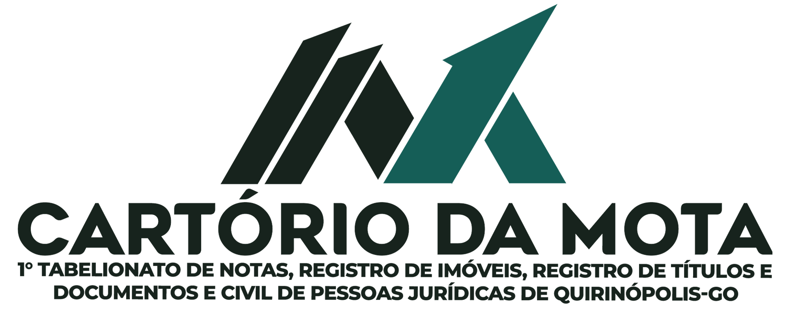

EMOLUMENTOS
Tabela de Emolumentos em Áudio
Acesse abaixo as tabelas de emolumentos disponíveis em formato de áudio.
▶
EMOLUMENTOS REGISTRO DE IMÓVEIS - EM ÁUDIO 2026
Ouvir tabela em áudio
→
▶
EMOLUMENTOS TABELIONATOS DE NOTAS - EM ÁUDIO 2026
Ouvir tabela em áudio
→
▶
CÓDIGO DE NORMAS E PROCEDIMENTOS DO FORO EXTRAJUDICIAL
Acessar código de normas
→
▶
EMOLUMENTOS DOS SELOS ELETRÔNICOS DO PODER JUDICIÁRIO GO - 2026
Acessar emolumentos
→